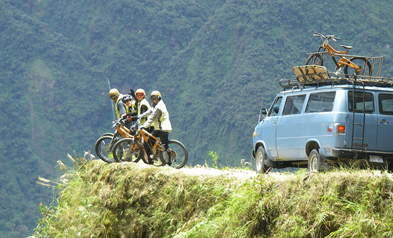

Esta carretera fue construida en los años 1931-1936, de hecho, se extendía desde una ruta de acceso a una carretera para vehículos. El camino originalmente fue construido por los incas y el ensanchamiento de la misma fue necesario para el tránsito de los vehículos que se dedicaban al negocio debido al creciente comercio de bienes el cual aumentó considerablemente (alimentos, madera, caucho y demás desde La Paz hacia los Yungas).
Hace mucho tiempo los prisioneros de la guerra del Chaco construyeron esta carretera y una vez concluida estos fueron arrojados al precipicio. Ahí surgió el nombre de “la ruta de la muerte”. Una leyenda cuenta que todos los prisioneros paraguayos maldecían esta carretera y prometieron llevar almas a la muerte con ellos. Desde esta manera, quienes son muy supersticiosos, se explican las muchas muertes en este camino a través de incontables accidentes.
No hay estadísticas exactas sobre las muertes, pero se habla de hasta 200 personas por año hasta la finalización de la nueva carretera a fines del 2007. La nueva carretera de dos vías cuenta con 54 puentes y un número de estabilización de taludes. Esta instalación tomó 10 años. La razón principal de su construcción fue, entre otras cosas, un accidente en el año 1994 en el que seis israelíes cegaron sus vidas. En 1995, el Banco Interamericano de Desarrollo otorgó a la carretera de los Yungas el título "El camino más peligroso del mundo" Esto fue principalmente por su tráfico muy alto, a menudo en malas condiciones meteorológicas (niebla, lluvia) y su condición ya que se encontraba en un área en peligro de deslizamiento.
A principios de los 90, principalmente viajeros israelíes preguntaron cada vez más en La Paz por un medio alternativo de transporte para llegar a Rurrenabaque. Este es un destino turístico muy popular para los israelíes desde 1985 gracias a la aparición del libro “A la vuelta de Tuichi” de Yossi Ghinsberg el cual se convirtió en un éxito de ventas. Es así que por primera vez los paseos en bicicleta fueron ofrecidos en esta ruta.
Entre las condiciones de la época, se trataba de un Tour entre todos los autobuses y camiones cubiertos de polvo o barro que a menudo recorrían esta ruta a altas horas de la noche. Probablemente esto era más seguro que en unos autobuses normales. Así fue como uno de las atracciones turísticas en Bolivia nació. Ahora que prácticamente no hay más tráfico en el camino antiguo, esta carretera a los Yungas es una verdadera experiencia para los ciclistas. La calidad de las ruedas y el equipo está ahora en un nivel alto.
Turismo en la carretera Yungas
El peligro de la carretera de la muerte de Bolivia atrae a turistas de todo el mundo. Todos los años, muchos ciclistas de montaña llegan al país para viajar en esta riesgosa ruta y vivir momentos de adrenalina. Hoy en día, el camino sigue siendo peligroso y es recomendado para los más aventureros.
Con el fin de garantizar viajes seguros en esta carretera, asegúrese de mirar en Death Road Bolivia Tours. Gulliver Expeditions ofrece una amplia gama de guías seguras y cautelosas para satisfacer sus necesidades de turismo en Yungas Road. Un guía profesional lo llevará por esta emocionante ruta sin arriesgar su vida.